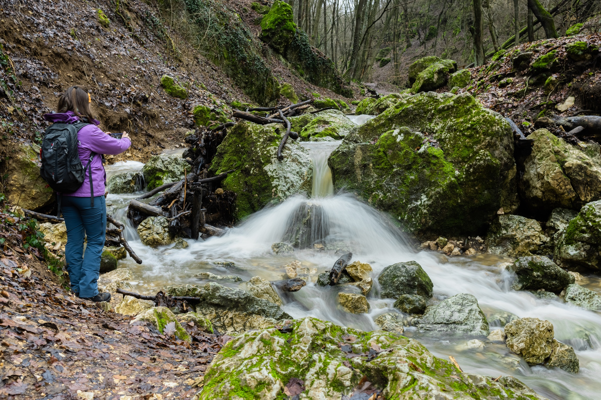

Dera-szurdok

A Dera-szurdok a Pilis hegység egyik legfestőibb völgye, amelyet a Dera-patak mélyített ki az évszázadok során. Ez a szurdok a természetjárók és kirándulók kedvelt célpontja, köszönhetően változatos tájának és természeti értékeinek. A szurdok meredek sziklafalai között sétálva különleges növény- és állatfajokkal találkozhatunk, melyek csak itt élnek a környéken. A patak hűs vizével és a környező erdők nyugalmával a Dera-szurdok igazi menedék a természet szerelmeseinek. A túraútvonalak jól karbantartottak és több nehézségi fokozatban érhetők el, így családok és tapasztalt túrázók egyaránt élvezhetik a kirándulást. A szurdok télen is különleges látványt nyújt, amikor a jégcsapok és a hóval borított sziklák mesebeli hangulatot teremtenek. Emellett a Dera-szurdok környékén több pihenőhely és kilátó található, ahol megcsodálhatjuk a Pilis hegység csodálatos panorámáját. A természetvédelemnek köszönhetően a szurdok megőrizte eredeti szépségét és gazdag élővilágát, így látogatása mindig felejthetetlen élmény.
A szurdok mészkő és dolomit sziklák között kanyarog, meredek falakkal és szűk ösvényekkel. A patak mentén gazdag növényzet található, melyben különféle ritka és védett fajok is élnek. A terület változatos mikroklímája egyedülálló élőhelyeket biztosít.
A Dera-szurdokban több jól jelzett túraútvonal vezet, amelyek különböző nehézségi szinteken érhetők el. Az útvonalak mentén pihenőhelyek, kilátópontok és információs táblák segítik a kirándulókat. A környék ideális családi túrákra és természetfotózásra egyaránt.
A Dera-szurdok védett természeti terület, ezért fontos, hogy látogatáskor tartsuk be a természetvédelmi szabályokat: ne szemeteljünk, ne tapossuk ki a növényeket, és csak a kijelölt útvonalakon járjunk. Így biztosíthatjuk, hogy ez a különleges hely megőrizze szépségét a következő generációk számára.